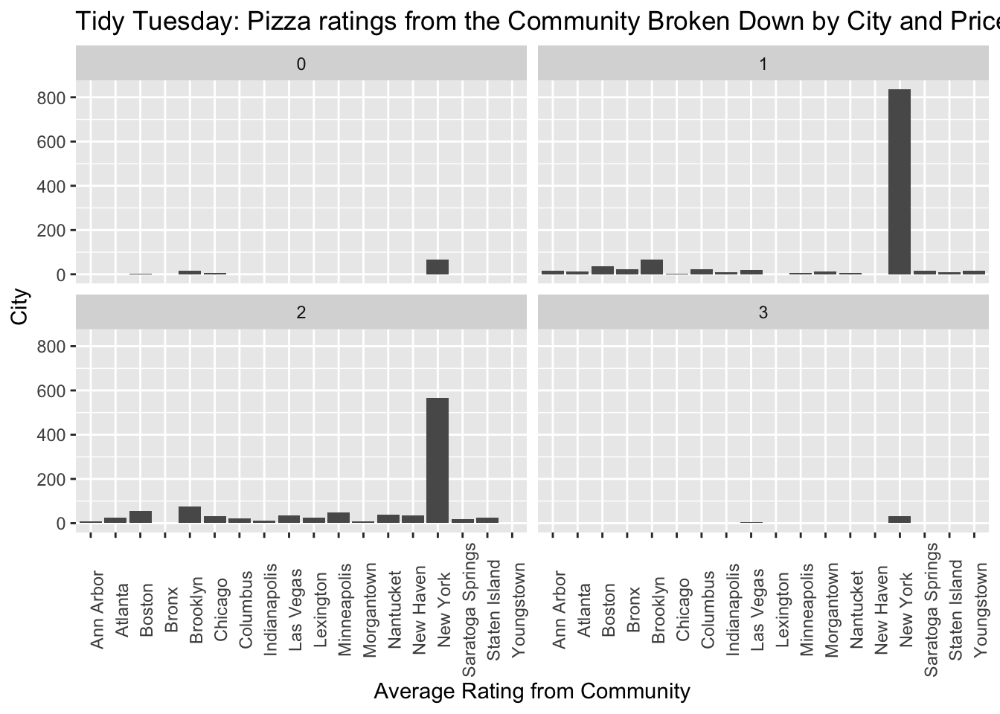
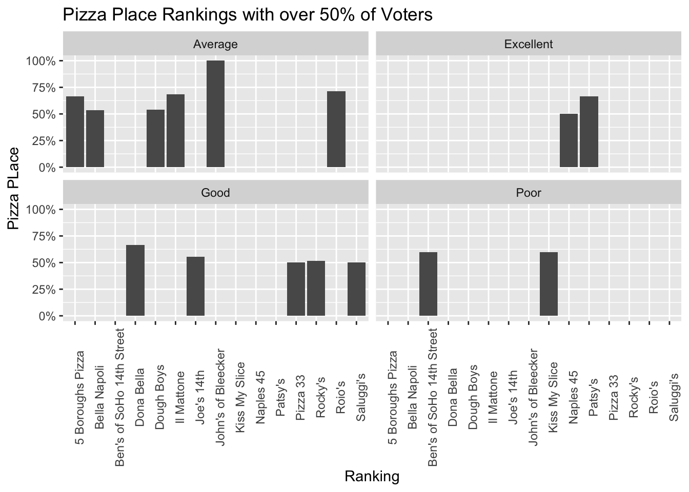
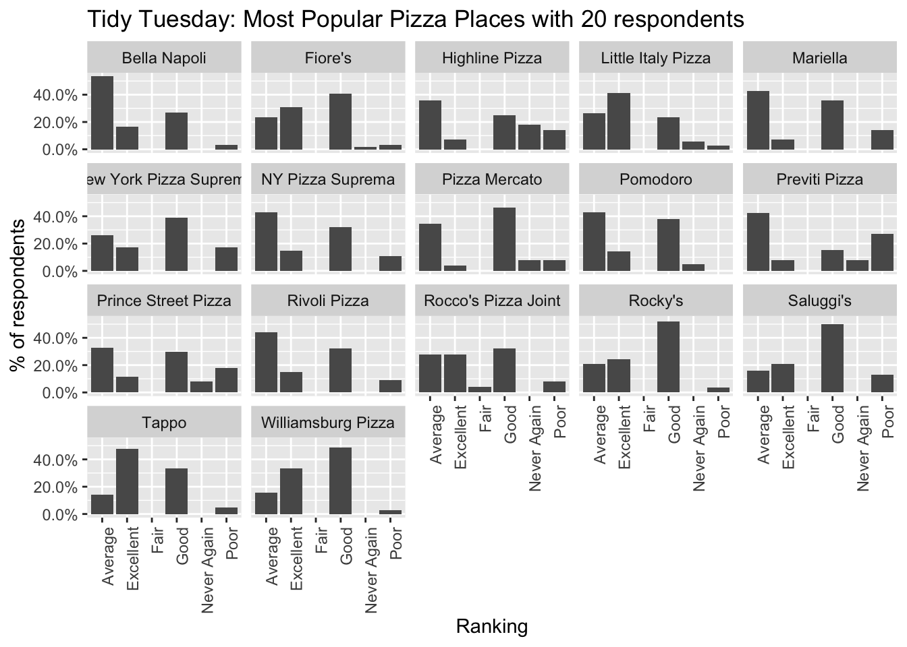
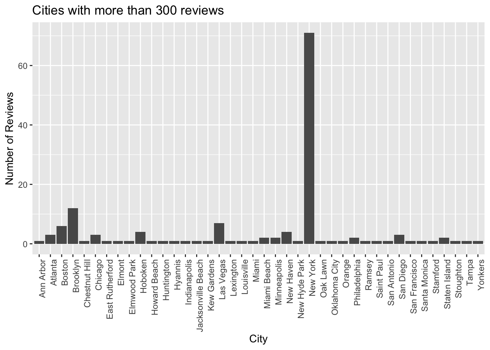

library loading
library(tidyverse)
library(reshape2)##
## Attaching package: 'reshape2'## The following object is masked from 'package:tidyr':
##
## smithsloading data
pizza_jared <- readr::read_csv("https://raw.githubusercontent.com/rfordatascience/tidytuesday/master/data/2019/2019-10-01/pizza_jared.csv")## Parsed with column specification:
## cols(
## polla_qid = col_double(),
## answer = col_character(),
## votes = col_double(),
## pollq_id = col_double(),
## question = col_character(),
## place = col_character(),
## time = col_double(),
## total_votes = col_double(),
## percent = col_double()
## )pizza_barstool <- readr::read_csv("https://raw.githubusercontent.com/rfordatascience/tidytuesday/master/data/2019/2019-10-01/pizza_barstool.csv")## Parsed with column specification:
## cols(
## .default = col_double(),
## name = col_character(),
## address1 = col_character(),
## city = col_character(),
## country = col_character()
## )## See spec(...) for full column specifications.pizza_datafiniti <- readr::read_csv("https://raw.githubusercontent.com/rfordatascience/tidytuesday/master/data/2019/2019-10-01/pizza_datafiniti.csv")## Parsed with column specification:
## cols(
## name = col_character(),
## address = col_character(),
## city = col_character(),
## country = col_character(),
## province = col_character(),
## latitude = col_double(),
## longitude = col_double(),
## categories = col_character(),
## price_range_min = col_double(),
## price_range_max = col_double()
## )DATA PREVIEWING
lets view the data
First I Want to see which cities have a lot of reviews
count(pizza_barstool, city)## # A tibble: 99 x 2
## city n
## <chr> <int>
## 1 Alpharetta 1
## 2 Ann Arbor 4
## 3 Atlanta 6
## 4 Augusta 1
## 5 Austin 1
## 6 Austintown 1
## 7 Blacksburg 1
## 8 Boston 13
## 9 Braintree 1
## 10 Brockton 1
## # … with 89 more rowsThis gives us ten pages of data. Some cities only one have one review, so lets eliminate those.
pizza_jared %>%
count(place, sort = TRUE)## # A tibble: 56 x 2
## place n
## <chr> <int>
## 1 Fiore's 25
## 2 Prince Street Pizza 20
## 3 NY Pizza Suprema 15
## 4 Joe's 14th 10
## 5 Joe's Pizza 14th 10
## 6 Little Italy Pizza 10
## 7 Pizza Mercato 10
## 8 Pizza Paradise 10
## 9 Pomodoro 10
## 10 Rocco's Pizza Joint 10
## # … with 46 more rowslooks like we have 56 pizza places
pizza_jared %>%
count(answer)## # A tibble: 6 x 2
## answer n
## <chr> <int>
## 1 Average 75
## 2 Excellent 75
## 3 Fair 1
## 4 Good 75
## 5 Never Again 74
## 6 Poor 75the different kind of answer we could get
CLEANING From our earlier view we found that these cities have more than two:Ann Arbor, Atlanta, Boston, Bronx, Brooklyn, Chicago, Columbus, Indianapolis, Las Vegas, Lexington, Lousiville, Minneapolis, Morgantwon, Nantucket, New Haven, New York, Saratoga Springs, Staten Island, Youngstown
by_city <- pizza_barstool %>%
filter(city %in% c("Ann Arbor", "Atlanta", "Boston", "Bronx", "Brooklyn", "Chicago", "Columbus", "Indianapolis", "Las Vegas", "Lexington", "Lousiville", "Minneapolis", "Morgantown", "Nantucket", "New Haven", "New York", "Saratoga Springs", "Staten Island", "Youngstown")) %>%
group_by(city, price_level, review_stats_community_average_score)By_city_2 <- pizza_barstool %>%
filter(city %in% c("Ann Arbor", "Atlanta", "Boston", "Bronx", "Brooklyn", "Chicago", "Columbus", "Indianapolis", "Las Vegas", "Lexington", "Lousiville", "Minneapolis", "Morgantown", "Nantucket", "New Haven", "New York", "Saratoga Springs", "Staten Island", "Youngstown")) %>%
select(city, review_stats_community_average_score, review_stats_critic_average_score)After glancing at the data,and reviewing what others did on twitter, this what I have decided: 1. I want to mutate the date and time - use the function as.POSIXct to mutate the date and time to represent calendar dates and times (Note - this may come in handy for tidying my dataset for the project) 2. I want to group by place so question and answer are then associated with place 3. Summarize the votes 4. Then get the total summary of votes 5. ungroup so I can have the percent of votes
by_place <- pizza_jared %>%
mutate(time = as.POSIXct(time, origin = "1970-01-01"), date = as.Date(time), anwser = fct_relevel(answer)) %>%
group_by(place, question, answer) %>%
summarize(votes = sum (votes)) %>%
mutate(total = sum(votes)) %>%
ungroup() %>%
mutate(percent = votes / total,
answer_interger = as.integer(answer),
average = sum(answer_interger * percent))## Warning: NAs introduced by coercionFIGURES
Which city has the best pizza bsed on the community average score for the price level?
by_city %>%
ggplot(aes(city, review_stats_community_average_score)) +
geom_col() +
theme(axis.text.x = element_text(angle = 90, hjust = .5)) +
facet_wrap(~ price_level) +
labs (x = "Average Rating from Community",
y = "City",
title = "Tidy Tuesday: Pizza ratings from the Community Broken Down by City and Price")
Lets make a another bar graph This graph tells us, when over 50% of votes are for a rating of the pizza quality by pizza place. The puprose of this graph is to help someone narrow down what place they may want to go
by_place %>%
filter (percent >= 0.50) %>%
ggplot(aes(place, percent)) +
geom_col() +
theme(axis.text.x = element_text(angle = 90, hjust = .5)) +
scale_y_continuous(labels = scales::percent) +
facet_wrap(~ answer) +
labs (x = "Ranking",
y = "Pizza PLace",
title = "Pizza Place Rankings with over 50% of Voters")
Want a minimum number of votes to be included across the “meet up”…lets do 20
answer_orders <- c("Never Again", "Poor", "Average", "Good", "Excellent")
by_place %>%
filter(total >= 20) %>%
ggplot(aes(answer, percent)) +
geom_col() +
facet_wrap(~ place) +
theme(axis.text.x = element_text(angle = 90, hjust = 1)) +
scale_y_continuous(labels = scales::percent) +
labs (x = "Ranking",
y = "% of respondents",
title = "Tidy Tuesday: Most Popular Pizza Places with 20 respondents")
pizza_barstool %>%
filter(provider_review_count >= 300) %>%
ggplot(aes(city)) +
geom_bar() +
theme(axis.text.x = element_text(angle = 90, hjust = 1)) +
labs (x = "City",
y = "Number of Reviews",
title = "Cities with more than 300 reviews")